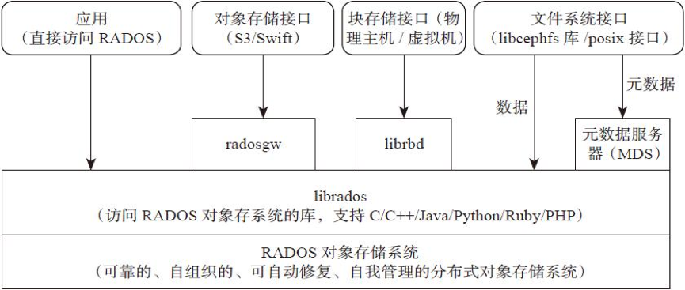
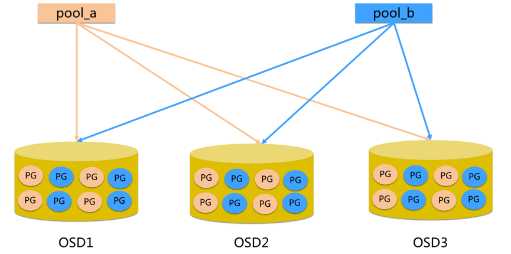
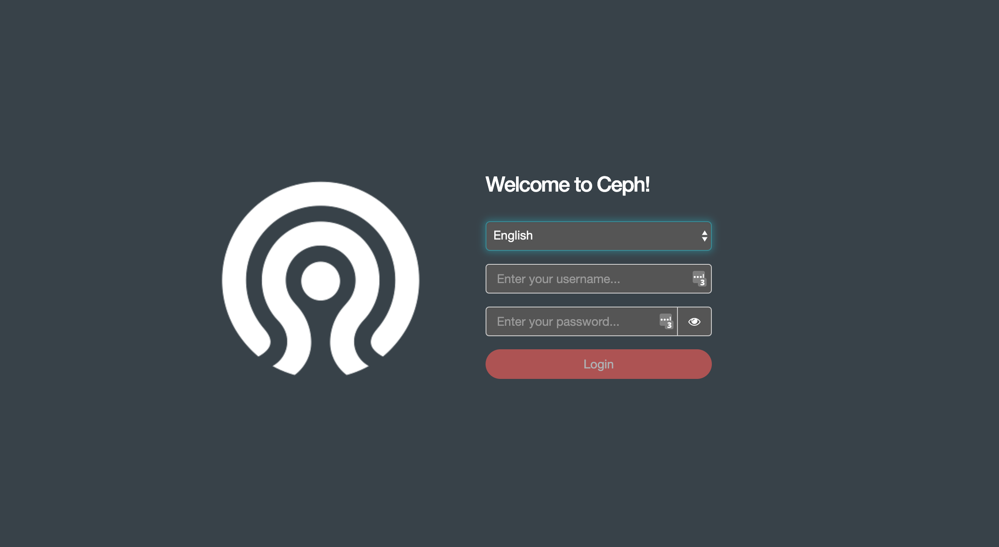
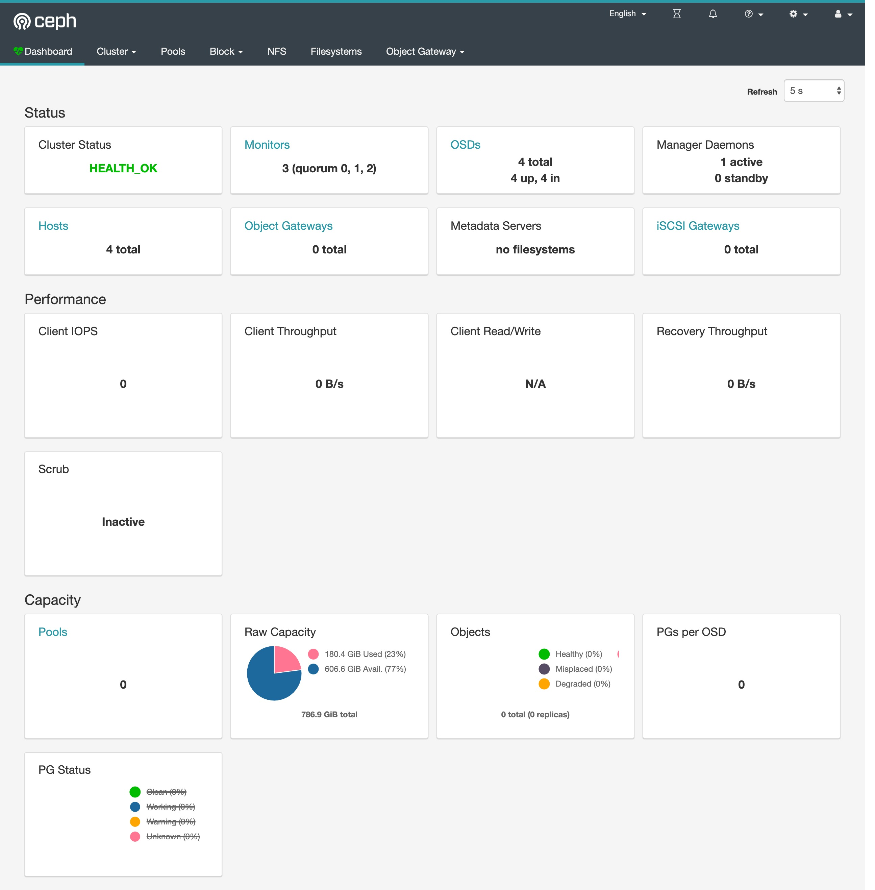
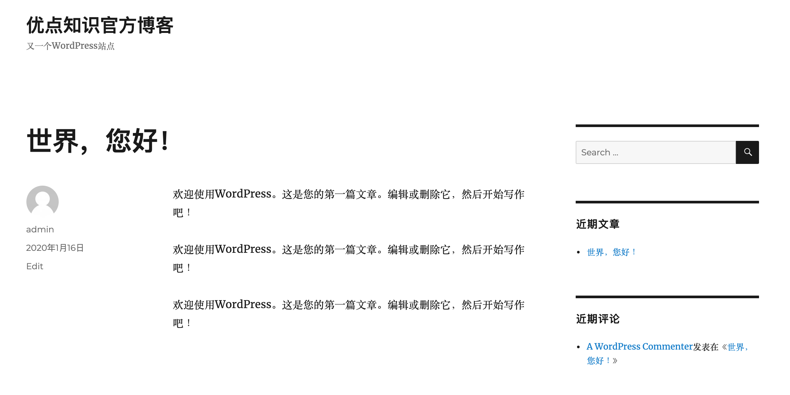

Ceph¶
Ceph 是一个统一的分布式存储系统，提供较好的性能、可靠性和可扩展性。最早起源于 Sage 博士期间的工作，随后贡献给开源社区。
简介¶
高性能
- 抛弃了传统的集中式存储运输局寻址的方案，采用
CRUSH算法，数据分布均衡，并行度高。 - 考虑了容灾域的隔离，能够实现各类负载的副本设置规则，例如跨机房、机架感知等。
- 能够支持上千个存储节点的规模，支持 TB 到 PB 级的数据。
高可用性
- 副本数可以灵活控制
- 支持故障域分离，数据强一致性
- 多种故障场景自动进行修复自愈
- 没有单点故障，自动管理
高可扩展性
- 去中心化
- 扩展灵活
- 随着节点增加而线性增长
特性丰富
- 支持三种存储接口：块存储、文件存储、对象存储
- 支持自定义接口，支持多种语言驱动
架构¶
支持三种接口
- Object：有原生 API，而且也兼容 Swift 和 S3 的 API
- Block：支持精简配置、快照、克隆
- File：Posix 接口，支持快照

组件¶
Monitor：一个 Ceph 集群需要多个 Monitor 组成的小集群，它们通过 Paxos 同步数据，用来保存 OSD 的元数据。
OSD：全称 Object Storage Device，也就是负责响应客户端请求返回具体数据的进程，一个 Ceph 集群一般都有很多个 OSD。主要功能用于数据的存储，当直接使用硬盘作为存储目标时，一块硬盘称之为 OSD，当使用一个目录作为存储目标的时候，这个目录也被称为 OSD。
MDS：全称 Ceph Metadata Server，是 CephFS 服务依赖的元数据服务，对象存储和块设备存储不需要该服务。
Object：Ceph 最底层的存储单元是 Object 对象，一条数据、一个配置都是一个对象，每个 Object 包含 ID、元数据和原始数据。
Pool：Pool 是一个存储对象的逻辑分区，它通常规定了数据冗余的类型与副本数，默认为3副本。对于不同类型的存储，需要单独的 Pool，如 RBD。
PG：全称 Placement Grouops，是一个逻辑概念，一个 OSD 包含多个 PG。引入 PG 这一层其实是为了更好的分配数据和定位数据。每个 Pool 内包含很多个 PG，它是一个对象的集合，服务端数据均衡和恢复的最小单位就是 PG。

- pool 是 ceph 存储数据时的逻辑分区，它起到 namespace 的作用
- 每个 pool 包含一定数量(可配置)的 PG
- PG 里的对象被映射到不同的 Object 上
- pool 是分布到整个集群的
FileStore与BlueStore：FileStore 是老版本默认使用的后端存储引擎，如果使用 FileStore，建议使用 xfs 文件系统。BlueStore 是一个新的后端存储引擎，可以直接管理裸硬盘，抛弃了 ext4 与 xfs 等本地文件系统。可以直接对物理硬盘进行操作，同时效率也高出很多。
RADOS：全称 Reliable Autonomic Distributed Object Store，是 Ceph 集群的精华，用于实现数据分配、Failover 等集群操作。
Librados：Librados 是 Rados 提供库，因为 RADOS 是协议很难直接访问，因此上层的 RBD、RGW 和 CephFS 都是通过 librados 访问的，目前提供 PHP、Ruby、Java、Python、C 和 C++ 支持。
CRUSH：CRUSH 是 Ceph 使用的数据分布算法，类似一致性哈希，让数据分配到预期的地方。
RBD：全称 RADOS Block Device，是 Ceph 对外提供的块设备服务，如虚拟机硬盘，支持快照功能。
RGW：全称是 RADOS Gateway，是 Ceph 对外提供的对象存储服务，接口与 S3 和 Swift 兼容。
CephFS：全称 Ceph File System，是 Ceph 对外提供的文件系统服务。
块存储¶
典型设备
磁盘阵列，硬盘，主要是将裸磁盘空间映射给主机使用的。
优点
- 通过 Raid 与 LVM 等手段，对数据提供了保护。
- 多块廉价的硬盘组合起来，提高容量。
- 多块磁盘组合出来的逻辑盘，提升读写效率。
缺点
- 采用 SAN 架构组网时，光纤交换机，造价成本高。
- 主机之间无法共享数据。
使用场景
- Docker 容器、虚拟机磁盘存储分配。
- 日志存储
- 文件存储
- ...
文件存储¶
典型设备 FTP、NFS 服务器，为了克服块存储文件无法共享的问题，所以有了文件存储，在服务器上架设 FTP 与 NFS 服务器，就是文件存储。
优点
- 造价低，随便一台机器就可以了
- 方便文件可以共享
缺点
- 读写速率低
- 传输速率慢
使用场景
- 日志存储
- 有目录结构的文件存储
- ...
对象存储¶
典型设备
内置大容量硬盘的分布式服务器(swift, s3)；多台服务器内置大容量硬盘，安装上对象存储管理软件，对外提供读写访问功能。
优点
- 具备块存储的读写高速。
- 具备文件存储的共享等特性
使用场景：(适合更新变动较少的数据)
- 图片存储
- 视频存储
- ...
部署¶
由于我们这里在 Kubernetes 集群中使用，也为了方便管理，我们这里使用 Rook 来部署 Ceph 集群，Rook 是一个开源的云原生存储编排工具，提供平台、框架和对各种存储解决方案的支持，以和云原生环境进行本地集成。
Rook 将存储软件转变成自我管理、自我扩展和自我修复的存储服务，通过自动化部署、启动、配置、供应、扩展、升级、迁移、灾难恢复、监控和资源管理来实现。Rook 底层使用云原生容器管理、调度和编排平台提供的能力来提供这些功能，其实就是我们平常说的 Operator。Rook 利用扩展功能将其深度集成到云原生环境中，并为调度、生命周期管理、资源管理、安全性、监控等提供了无缝的体验。有关 Rook 当前支持的存储解决方案的状态的更多详细信息，可以参考 Rook 仓库 的项目介绍。

Rook 包含多个组件：
- Rook Operator：Rook 的核心组件，Rook Operator 是一个简单的容器，自动启动存储集群，并监控存储守护进程，来确保存储集群的健康。
- Rook Agent：在每个存储节点上运行，并配置一个 FlexVolume 或者 CSI 插件，和 Kubernetes 的存储卷控制框架进行集成。Agent 处理所有的存储操作，例如挂接网络存储设备、在主机上加载存储卷以及格式化文件系统等。
- Rook Discovers：检测挂接到存储节点上的存储设备。
Rook 还会用 Kubernetes Pod 的形式，部署 Ceph 的 MON、OSD 以及 MGR 守护进程。Rook Operator 让用户可以通过 CRD 来创建和管理存储集群。每种资源都定义了自己的 CRD：
- RookCluster：提供了对存储机群的配置能力，用来提供块存储、对象存储以及共享文件系统。每个集群都有多个 Pool。
- Pool：为块存储提供支持，Pool 也是给文件和对象存储提供内部支持。
- Object Store：用 S3 兼容接口开放存储服务。
- File System：为多个 Kubernetes Pod 提供共享存储。
环境¶
Rook Ceph 需要使用 RBD 内核模块，我们可以通过运行 modprobe rbd 来测试 Kubernetes 节点是否有该模块，如果没有，则需要更新下内核版本。
另外需要在节点上安装 lvm2 软件包：
# Centos
sudo yum install -y lvm2
# Ubuntu
sudo apt-get install -y lvm2安装¶
我们这里部署最新的 release-1.2 版本的 Rook，部署清单文件地址：https://github.com/rook/rook/tree/release-1.2/cluster/examples/kubernetes/ceph。
从上面链接中下载 common.yaml 与 operator.yaml 两个资源清单文件：
# 会安装crd、rbac相关资源对象
$ kubectl apply -f common.yaml
# 安装 rook operator
$ kubectl apply -f operator.yaml在继续操作之前，验证 rook-ceph-operator 是否处于“Running”状态：
$ kubectl get pods -n rook-ceph
NAME READY STATUS RESTARTS AGE
rook-ceph-operator-6d8fb9498b-jxdwx 1/1 Running 0 34s
rook-discover-7wpsl 1/1 Running 0 32s
rook-discover-8t8lv 1/1 Running 0 32s
rook-discover-9t497 1/1 Running 0 32s
rook-discover-v57rd 1/1 Running 0 32s我们可以看到 Operator 运行成功后，还会有一个 DaemonSet 控制器运行得 rook-discover 应用，当 Rook Operator 处于 Running 状态，我们就可以创建 Ceph 集群了。为了使集群在重启后不受影响，请确保设置的 dataDirHostPath 属性值为有效得主机路径。更多相关设置，可以查看集群配置相关文档。
创建如下的资源清单文件：(cluster.yaml)
apiVersion: ceph.rook.io/v1
kind: CephCluster
metadata:
name: rook-ceph
namespace: rook-ceph
spec:
cephVersion:
# 最新得 ceph 镜像, 可以查看 https://hub.docker.com/r/ceph/ceph/tags
image: ceph/ceph:v14.2.5
dataDirHostPath: /var/lib/rook # 主机有效目录
mon:
count: 3
dashboard:
enabled: true
storage:
useAllNodes: true
useAllDevices: false
# 重要: Directories 应该只在预生产环境中使用
directories:
- path: /data/rook其中有几个比较重要的字段：
dataDirHostPath：宿主机上的目录，用于每个服务存储配置和数据。如果目录不存在，会自动创建该目录。由于此目录在主机上保留，因此在删除 Pod 后将保留该目录，另外不得使用以下路径及其任何子路径：/etc/ceph、/rook或/var/log/ceph。useAllNodes：用于表示是否使用集群中的所有节点进行存储，如果在nodes字段下指定了各个节点，则必须将useAllNodes设置为 false。useAllDevices：表示 OSD 是否自动使用节点上的所有设备，一般设置为 false，这样可控性较高directories：一般来说应该使用一块裸盘来做存储，有时为了测试方便，使用一个目录也是可以的，当然生成环境不推荐使用目录。
除了上面这些字段属性之外还有很多其他可以细粒度控制得参数，可以查看集群配置相关文档。
现在直接创建上面的 CephCluster 对象即可：
$ kubectl apply -f cluster.yaml
cephcluster.ceph.rook.io/rook-ceph created创建完成后，Rook Operator 就会根据我们的描述信息去自动创建 Ceph 集群了。
验证¶
要验证集群是否处于正常状态，我们可以使用 Rook 工具箱 来运行 ceph status 命令查看。
Rook 工具箱是一个用于调试和测试 Rook 的常用工具容器，该工具基于 CentOS 镜像，所以可以使用 yum 来轻松安装更多的工具包。我们这里用 Deployment 控制器来部署 Rook 工具箱，部署的资源清单文件如下所示：（toolbox.yaml）
apiVersion: apps/v1
kind: Deployment
metadata:
name: rook-ceph-tools
namespace: rook-ceph
labels:
app: rook-ceph-tools
spec:
replicas: 1
selector:
matchLabels:
app: rook-ceph-tools
template:
metadata:
labels:
app: rook-ceph-tools
spec:
dnsPolicy: ClusterFirstWithHostNet
containers:
- name: rook-ceph-tools
image: rook/ceph:v1.2.1
command: ["/tini"]
args: ["-g", "--", "/usr/local/bin/toolbox.sh"]
imagePullPolicy: IfNotPresent
env:
- name: ROOK_ADMIN_SECRET
valueFrom:
secretKeyRef:
name: rook-ceph-mon
key: admin-secret
securityContext:
privileged: true
volumeMounts:
- mountPath: /dev
name: dev
- mountPath: /sys/bus
name: sysbus
- mountPath: /lib/modules
name: libmodules
- name: mon-endpoint-volume
mountPath: /etc/rook
# 如果设置 hostNetwork: false, "rbd map" 命令会被 hang 住, 参考 https://github.com/rook/rook/issues/2021
hostNetwork: true
volumes:
- name: dev
hostPath:
path: /dev
- name: sysbus
hostPath:
path: /sys/bus
- name: libmodules
hostPath:
path: /lib/modules
- name: mon-endpoint-volume
configMap:
name: rook-ceph-mon-endpoints
items:
- key: data
path: mon-endpoints然后直接创建这个 Pod：
$ kubectl apply -f toolbox.yaml
deployment.apps/rook-ceph-tools created一旦 toolbox 的 Pod 运行成功后，我们就可以使用下面的命令进入到工具箱内部进行操作：
$ kubectl -n rook-ceph exec -it $(kubectl -n rook-ceph get pod -l "app=rook-ceph-tools" -o jsonpath='{.items[0].metadata.name}') bash工具箱中的所有可用工具命令均已准备就绪，可满足您的故障排除需求。例如：
ceph status
ceph osd status
ceph df
rados df比如现在我们要查看集群的状态，需要满足下面的条件才认为是健康的：
- 所有 mons 应该达到法定数量
- mgr 应该是激活状态
- 至少有一个 OSD 处于激活状态
- 如果不是 HEALTH_OK 状态，则应该查看告警或者错误信息
$ ceph status
ceph status
cluster:
id: dae083e6-8487-447b-b6ae-9eb321818439
health: HEALTH_OK
services:
mon: 3 daemons, quorum a,b,c (age 15m)
mgr: a(active, since 2m)
osd: 31 osds: 2 up (since 6m), 2 in (since 6m)
data:
pools: 0 pools, 0 pgs
objects: 0 objects, 0 B
usage: 79 GiB used, 314 GiB / 393 GiB avail
pgs:如果群集运行不正常，可以查看 Ceph 常见问题以了解更多详细信息和可能的解决方案。
Dashboard¶
Ceph 有一个 Dashboard 工具，我们可以在上面查看集群的状态，包括总体运行状态，mgr、osd 和其他 Ceph 进程的状态，查看池和 PG 状态，以及显示守护进程的日志等等。
我们可以在上面的 cluster CRD 对象中开启 dashboard，设置dashboard.enable=true即可，这样 Rook Operator 就会启用 ceph-mgr dashboard 模块，并将创建一个 Kubernetes Service 来暴露该服务，将启用端口 7000 进行 https 访问，如果 Ceph 集群部署成功了，我们可以使用下面的命令来查看 Dashboard 的 Service：
$ kubectl get svc -n rook-ceph
NAME TYPE CLUSTER-IP EXTERNAL-IP PORT(S) AGE
rook-ceph-mgr ClusterIP 10.99.87.1 <none> 9283/TCP 3m6s
rook-ceph-mgr-dashboard ClusterIP 10.111.195.180 <none> 7000/TCP 3m29s这里的 rook-ceph-mgr 服务用于报告 Prometheus metrics 指标数据的，而后面的的 rook-ceph-mgr-dashboard 服务就是我们的 Dashboard 服务，如果在集群内部我们可以通过 DNS 名称 http://rook-ceph-mgr-dashboard.rook-ceph:7000或者 CluterIP http://10.111.195.180:7000 来进行访问，但是如果要在集群外部进行访问的话，我们就需要通过 Ingress 或者 NodePort 类型的 Service 来暴露了，为了方便测试我们这里创建一个新的 NodePort 类型的服务来访问 Dashboard，资源清单如下所示：（dashboard-external.yaml）
apiVersion: v1
kind: Service
metadata:
name: rook-ceph-mgr-dashboard-external
namespace: rook-ceph
labels:
app: rook-ceph-mgr
rook_cluster: rook-ceph
spec:
ports:
- name: dashboard
port: 7000
protocol: TCP
targetPort: 7000
selector:
app: rook-ceph-mgr
rook_cluster: rook-ceph
type: NodePort同样直接创建即可：
$ kubectl apply -f dashboard-external.yaml创建完成后我们可以查看到新创建的 rook-ceph-mgr-dashboard-external 这个 Service 服务：
$ kubectl get svc -n rook-ceph
NAME TYPE CLUSTER-IP EXTERNAL-IP PORT(S) AGE
rook-ceph-mgr ClusterIP 10.96.49.29 <none> 9283/TCP 23m
rook-ceph-mgr-dashboard ClusterIP 10.109.8.98 <none> 7000/TCP 23m
rook-ceph-mgr-dashboard-external NodePort 10.109.53.223 <none> 7000:31361/TCP 14s现在我们需要通过 http://<NodeIp>:31361 就可以访问到 Dashboard 了。

但是在访问的时候需要我们登录才能够访问，Rook 创建了一个默认的用户 admin，并在运行 Rook 的命名空间中生成了一个名为 rook-ceph-dashboard-admin-password 的 Secret，要获取密码，可以运行以下命令：
$ kubectl -n rook-ceph get secret rook-ceph-dashboard-password -o jsonpath="{['data']['password']}" | base64 --decode && echo
xxxx（登录密码）用上面获得的密码和用户名 admin 就可以登录 Dashboard 了，在 Dashboard 上面可以查看到整个集群的状态：

使用¶
现在我们的 Ceph 集群搭建成功了，我们就可以来使用存储了。首先我们需要创建存储池，可以用 CRD 来定义 Pool。Rook 提供了两种机制来维持 OSD：
- 副本：缺省选项，每个对象都会根据
spec.replicated.size在多个磁盘上进行复制。建议非生产环境至少 2 个副本，生产环境至少 3 个。 - Erasure Code：是一种较为节约的方式。EC 把数据拆分 n 段（
spec.erasureCoded.dataChunks），再加入 k 个代码段（spec.erasureCoded.codingChunks），用分布的方式把n+k段数据保存在磁盘上。这种情况下 Ceph 能够隔离 k 个 OSD 的损失。
我们这里使用副本的方式，创建如下所示的 RBD 类型的存储池：(pool.yaml)
apiVersion: ceph.rook.io/v1
kind: CephBlockPool
metadata:
name: k8s-test-pool # operator会监听并创建一个pool，执行完后界面上也能看到对应的pool
namespace: rook-ceph
spec:
failureDomain: host # 数据块的故障域: 值为host时，每个数据块将放置在不同的主机上;值为osd时，每个数据块将放置在不同的osd上
replicated:
size: 3 # 池中数据的副本数,1就是不保存任何副本直接创建上面的资源对象：
$ kubectl apply -f pool.yaml
cephblockpool.ceph.rook.io/k8s-test-pool created存储池创建完成后我们在 Dashboard 上面的确可以看到新增了一个 pool，但是会发现集群健康状态变成了 WARN，我们可以查看到有如下日志出现：
Health check update: too few PGs per OSD (6 < min 30) (TOO_FEW_PGS)这是因为每个 osd 上的 pg 数量小于最小的数目30个。pgs 为8，因为是3副本的配置，所以当有4个 osd 的时候，每个 osd 上均分了8/4 *3=6个pgs，也就是出现了如上的错误小于最小配置30个，集群这种状态如果进行数据的存储和操作，集群会卡死，无法响应io，同时会导致大面积的 osd down。
我们可以进入 toolbox 的容器中查看上面存储的 pg 数量：
$ ceph osd pool get k8s-test-pool pg_num
pg_num: 8我们可以通过增加 pg_num 来解决这个问题：
$ ceph osd pool set k8s-test-pool pg_num 64
set pool 1 pg_num to 64
$ ceph -s
cluster:
id: 7851387c-5d18-489a-8c04-b699fb9764c0
health: HEALTH_OK
services:
mon: 3 daemons, quorum a,b,c (age 33m)
mgr: a(active, since 32m)
osd: 4 osds: 4 up (since 32m), 4 in (since 32m)
data:
pools: 1 pools, 64 pgs
objects: 0 objects, 0 B
usage: 182 GiB used, 605 GiB / 787 GiB avail
pgs: 64 active+clean这个时候我们再查看就可以看到现在就是健康状态了。不过需要注意的是我们这里的 pool 上没有数据，所以修改 pg 影响并不大，但是如果是生产环境重新修改 pg 数，会对生产环境产生较大影响。因为 pg 数变了，就会导致整个集群的数据重新均衡和迁移，数据越大响应 io 的时间会越长。所以，最好在一开始就设置好 pg 数。
现在我们来创建一个 StorageClass 来进行动态存储配置，如下所示我们定义一个 Ceph 的块存储的 StorageClass：(storageclass.yaml)
apiVersion: storage.k8s.io/v1
kind: StorageClass
metadata:
name: rook-ceph-block
provisioner: rook-ceph.rbd.csi.ceph.com
parameters:
# clusterID 是 rook 集群运行的命名空间
clusterID: rook-ceph
# 指定存储池
pool: k8s-test-pool
# RBD image (实际的存储介质) 格式. 默认为 "2".
imageFormat: "2"
# RBD image 特性. CSI RBD 现在只支持 `layering` .
imageFeatures: layering
# Ceph 管理员认证信息，这些都是在 clusterID 命名空间下面自动生成的
csi.storage.k8s.io/provisioner-secret-name: rook-csi-rbd-provisioner
csi.storage.k8s.io/provisioner-secret-namespace: rook-ceph
csi.storage.k8s.io/node-stage-secret-name: rook-csi-rbd-node
csi.storage.k8s.io/node-stage-secret-namespace: rook-ceph
# 指定 volume 的文件系统格式，如果不指定, csi-provisioner 会默认设置为 `ext4`
csi.storage.k8s.io/fstype: ext4
# uncomment the following to use rbd-nbd as mounter on supported nodes
# **IMPORTANT**: If you are using rbd-nbd as the mounter, during upgrade you will be hit a ceph-csi
# issue that causes the mount to be disconnected. You will need to follow special upgrade steps
# to restart your application pods. Therefore, this option is not recommended.
#mounter: rbd-nbd
reclaimPolicy: Delete直接创建上面的 StorageClass 资源对象：
$ kubectl apply -f storageclass.yaml
storageclass.storage.k8s.io/rook-ceph-block created
$ kubectl get storageclass
NAME PROVISIONER AGE
rook-ceph-block rook-ceph.rbd.csi.ceph.com 35s然后创建一个 PVC 来使用上面的 StorageClass 对象：(pvc.yaml)
apiVersion: v1
kind: PersistentVolumeClaim
metadata:
name: mysql-pv-claim
labels:
app: wordpress
spec:
storageClassName: rook-ceph-block
accessModes:
- ReadWriteOnce
resources:
requests:
storage: 20Gi同样直接创建上面的 PVC 资源对象：
$ kubectl apply -f pvc.yaml
persistentvolumeclaim/mysql-pv-claim created
$ kubectl get pvc -l app=wordpress
NAME STATUS VOLUME CAPACITY ACCESS MODES STORAGECLASS AGE
mysql-pv-claim Bound pvc-1eab82e3-d214-4d8e-8fcc-ed379c24e0e3 20Gi RWO rook-ceph-block 32m创建完成后我们可以看到我们的 PVC 对象已经是 Bound 状态了，自动创建了对应的 PV，然后我们就可以直接使用这个 PVC 对象来做数据持久化操作了。
这个时候可能集群还会出现如下的健康提示：
$ ceph health detail
HEALTH_WARN application not enabled on 1 pool(s)
POOL_APP_NOT_ENABLED application not enabled on 1 pool(s)
application not enabled on pool 'k8s-test-pool'
use 'ceph osd pool application enable <pool-name> <app-name>', where <app-name> is 'cephfs', 'rbd', 'rgw', or freeform for custom applications.
$ ceph osd pool application enable k8s-test-pool k8srbd
enabled application 'k8srbd' on pool 'k8s-test-pool'根据提示启用一个 application 即可。
在官方仓库 cluster/examples/kubernetes 目录下，官方给了个 wordpress 的例子，可以直接运行测试即可：
$ kubectl apply -f mysql.yaml
$ kubectl apply -f wordpress.yaml 官方的这个示例里面的 wordpress 用的 Loadbalancer 类型，我们可以改成 NodePort：
$ kubectl get pvc -l app=wordpress
NAME STATUS VOLUME CAPACITY ACCESS MODES STORAGECLASS AGE
mysql-pv-claim Bound pvc-1eab82e3-d214-4d8e-8fcc-ed379c24e0e3 20Gi RWO rook-ceph-block 12h
wp-pv-claim Bound pvc-237932ed-5ca7-468c-bd16-220ebb2a1ce3 20Gi RWO rook-ceph-block 25s
$ kubectl get pods -l app=wordpress
NAME READY STATUS RESTARTS AGE
wordpress-5b886cf59b-4xwn8 1/1 Running 0 24m
wordpress-mysql-b9ddd6d4c-qhjd4 1/1 Running 0 24m
$ kubectl get svc -l app=wordpress
NAME TYPE CLUSTER-IP EXTERNAL-IP PORT(S) AGE
wordpress NodePort 10.106.253.225 <none> 80:30307/TCP 80s
wordpress-mysql ClusterIP None <none> 3306/TCP 87s当应用都处于 Running 状态后，我们可以通过 http://<任意节点IP>:30307 去访问 wordpress 应用：

比如我们在第一篇文章中更改下内容，然后我们将应用 Pod 全部删除重建：
$ kubectl delete pod wordpress-mysql-b9ddd6d4c-qhjd4 wordpress-5b886cf59b-4xwn8
pod "wordpress-mysql-b9ddd6d4c-qhjd4" deleted
pod "wordpress-5b886cf59b-4xwn8" deleted
$ kubectl get pods -l app=wordpress
NAME READY STATUS RESTARTS AGE
wordpress-5b886cf59b-kwxk4 1/1 Running 0 2m52s
wordpress-mysql-b9ddd6d4c-kkcr7 1/1 Running 0 2m52s当 Pod 重建完成后再次访问 wordpress 应用的主页我们可以发现之前我们添加的数据仍然存在，这就证明我们的数据持久化是正确的。